Virtualization and Encapsulation
Physical Datacenter Limitations
Datacenters are organized in a fixed and structured way. Identical servers are organized into racks, and racks arranged in some fixed topology. This approach has some benefits. For example, it gives us a natural way to assign hierarchical addresses.
However, when we consider how applications are hosted on datacenters, the fixed organization of datacenters has some downsides. Suppose Google introduced a new service that they want to host in an existing datacenter. If we placed that application directly on a physical server, someone would have to physically install a new server, with its own IP address, for this application. If the service expands, more servers might need to be installed. If the server goes down, we’d have to wait for somebody to fix it. The key problem here is that changing physical infrastructure is hard, but we often want to add new hosts, scale up existing hosts, and move hosts quickly and frequently.
Placing applications on physical servers also introduces scaling issues. Suppose Google’s new service is very lightweight, but needs a dedicated server (e.g. for security reasons). We’d have to assign an entire physical server to this lightweight service, and most of the server’s computing capacity would be unused.
This approach also has routing issues. Suppose we wanted to move the service to a different part of the datacenter building (e.g. because part of the building is undergoing maintenance). First, someone would have to physically move the server in the building. Also, in our hierarchical address model, we would need to assign this service a new IP address corresponding to its new physical location. Ideally, the application would prefer to keep the same address, regardless of its datacenter location.
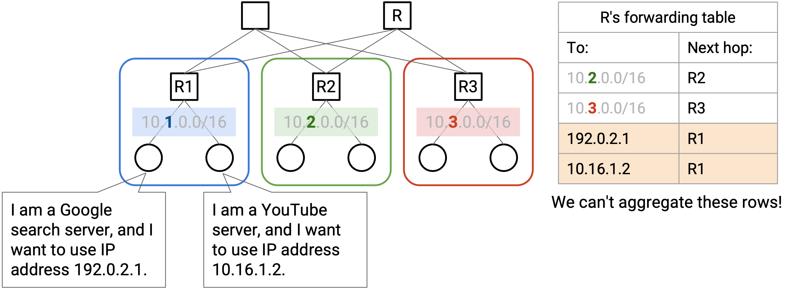
Virtualization
We can use virtualization to solve these problems and give applications more flexibility, while maintaining the rigid physical structure of the datacenter. Virtualization allows us to run one or more virtual servers inside a physical server.
The virtual server gives applications the illusion that they are running on a dedicated physical machine. However, in reality, multiple virtual servers might be running on the same machine. When the application tries to interact with hardware (e.g. disk, network card), it is actually interacting with a hypervisor in software. The hypervisor presents each virtual application with the same interface that real hardware would. The hypervisor itself runs on actual physical hardware, and can forward application requests (e.g. disk write, network packet send) to the hardware level.
With virtualization, if we have a new application, we can ask a hypervisor to start up a new virtual machine for this application. The hypervisor runs in software, so there’s no need to install any new server in the physical datacenter. Similarly, we can move hosts to a different physical machine, entirely in software.
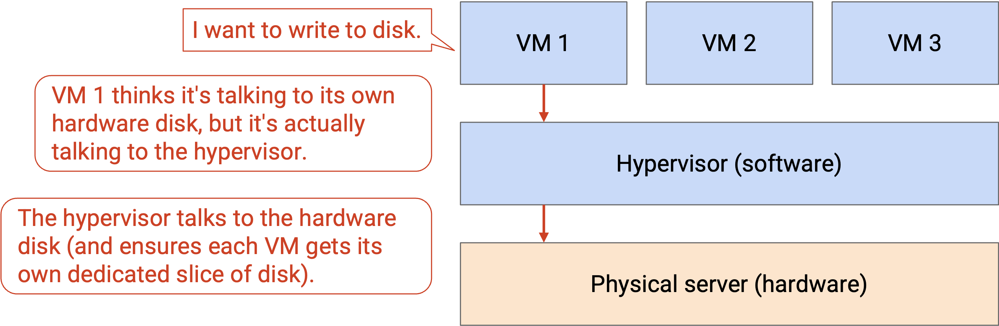
Virtualization allows multiple applications to share a physical server. The applications can be separated from each other, and can be managed by different people. This lets us use the compute resources in the datacenter more efficiently. This also allows us to have more hosts in the datacenter. For example, a single rack with 40 servers could have more than 40 end hosts.
Virtual Switches
The physical server has a single network card and a single IP address, but we need to give each virtual machine the illusion that it has its own dedicated network card and address. Also, switches might now have multiple virtual machines connected to a single physical port.
In order to manage multiple network connections on the same physical machine, the server needs a virtual switch. This virtual switch runs in software on the server (it’s not a physical router), and performs the same operations as a real switch (e.g. forwarding packets). Each virtual machine is connected to the virtual switch, and the virtual switch is connected to the rest of the network.
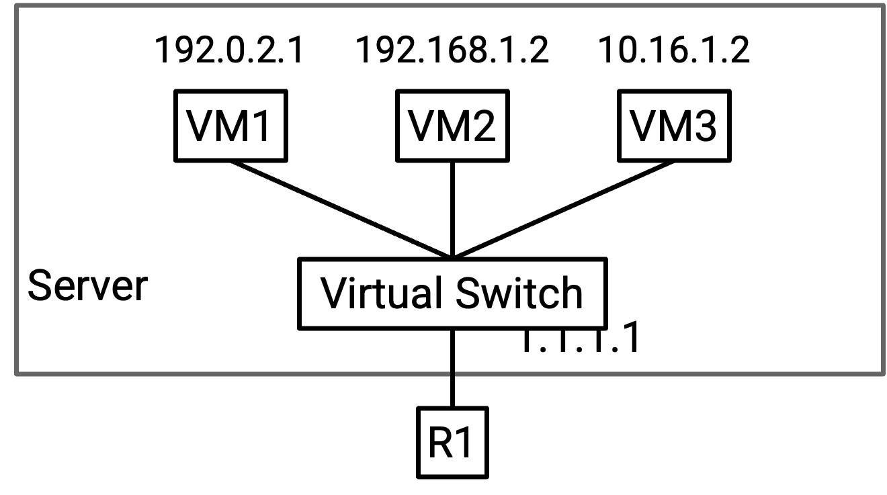
Note: Switches usually run on dedicated hardware to maximize efficiency. Virtual switches can be run in software on a general-purpose CPU because they only need to support a few virtual machines (lower capacity than what switches usually handle).
Underlay and Overlay Network
With virtualization, we now have virtual hosts running on top of physical servers. Unlike physical servers, virtual hosts can be created, shut down, and changed rapidly.
Virtual machines don’t necessarily use the same addressing scheme as the physical servers. Physical server IP addresses are defined by the physical datacenter topology (e.g. pods, racks). By contrast, virtual machine IP addresses are usually defined by some real-life hierarchy (e.g. countries, organizations). In particular, the virtual hosts on a single physical server don’t necessarily all have the same IP prefixes, so we can’t use the same aggregation tricks to scale up.
If we tried to naively extend our routing schemes to support virtual machines, our forwarding tables would become very large, very quickly. Previously, we could aggregate by saying: “all servers in the blue pod have the same IP prefix, and they all have a next hop of R2.” Now, the servers in that blue pod could contain hundreds of virtual hosts, all with different IP addresses (no common prefix). We would need a separate forwarding entry for every virtual host. Also, if a virtual host moves to a different physical machine (keeping the same IP address), the routing protocol would have to re-discover paths to this virtual host. Can we find a way to avoid scaling the datacenter to support every VM address?
The key problem here is that we now have two different addressing systems, one for virtual hosts, and one for physical hosts. Both addressing schemes work at the IP layer, but within the IP layer, there are now two sub-layers of abstraction that we need to think about.
The underlay network handles routing between physical machines. The underlay network contains datacenter infrastructure like top-of-rack switches and spine switches. The underlay network scales well because we define hierarchical addresses using the physical datacenter topology.
The overlay network exists on top of the physical topology (underlay), and it only thinks about routing between virtual machines. In practice, each virtual machine usually only needs to communicate with a few other virtual machines in the network. As a result, the overlay network scales well because a virtual machine does not need to know about every single other virtual machine.
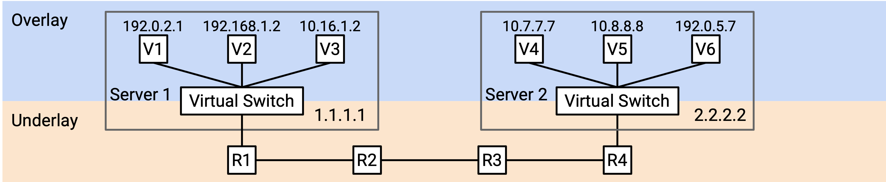
Ideally, we’d like the two layers to think about addressing separately. The underlay network should not need to know about virtual host addresses (otherwise, it would scale poorly). Similarly, the overlay network should not need to know about every physical server in the datacenter (each VM only needs to know about a few other VMs).
If we didn’t tell the underlay network about virtual host addresses, then if a datacenter switch gets a packet with a virtual IP as the destination, it would look in its forwarding table, not find any virtual IPs, and drop this packet. We need some way to bridge the gap between the overlay (thinking virtually) and the underlay (thinking physically).
Encapsulation
To unify the overlay and underlay layers, we can use the same strategies with layering and headers that we used when we designed the Internet!
So far, we’ve treated IP as a single layer, and every packet has a single IP header, which understands the IP addressing system.
Now that we have two IP sub-layers with two different IP addressing systems, we could introduce an additional header into the packet. For example, we could have two IP headers, where one header understands the overlay network, and the other header understands the underlay network. Or, we could use the original IP header for the underlay network, and introduce a new type of header (different from IP) for the overlay network.
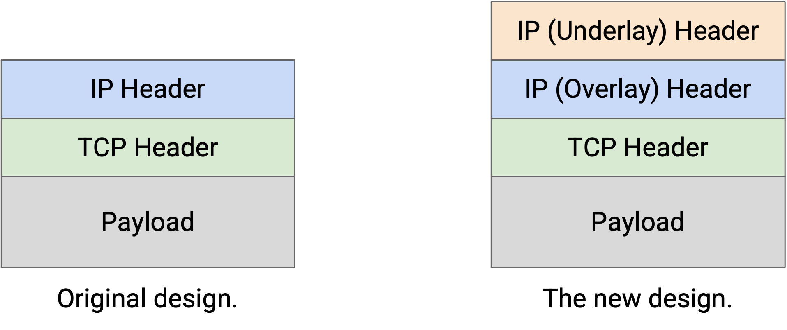
Now, our strategy for routing packets can combine the overlay and underlay networks. Suppose VM A wants to send a packet to VM B.
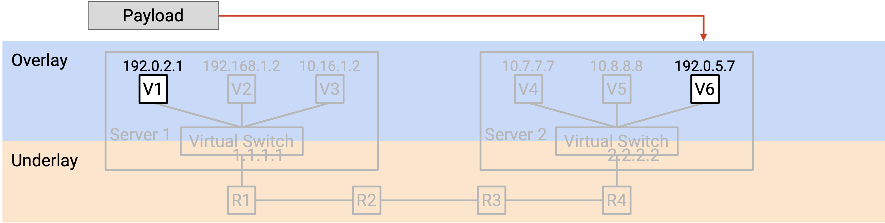
-
VM A creates a packet with a single IP header, which contains the virtual IP address of B. (Remember, A is thinking in terms of overlay, and does not know about underlay physical IP addresses.) VM A forwards this packet to the virtual switch (on A’s physical server).
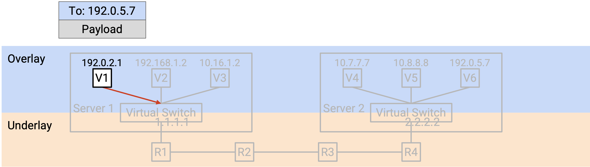
-
The virtual switch reads the header to learn B’s virtual IP address. Then, the virtual switch looks up the physical server address corresponding to B’s virtual IP address. (We haven’t described how to do this yet.)
The virtual switch adds an additional outer header containing B’s physical server address. Adding the header is sometimes called encapsulation.
At this point, the packet has two headers. The inner header (higher layer, overlay, added by VM A) contains B’s virtual IP address, and the outer header (lower layer, underlay, added by virtual switch) contains B’s physical server address.
The virtual switch forwards this packet to the next hop switch, based on the physical server address.
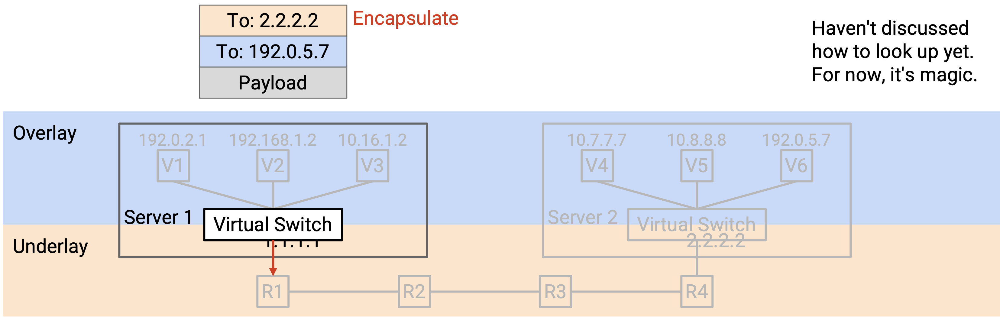
-
The packet is sent through the underlay network. Each switch in the datacenter only looks at the outer header (underlay, physical server address) to decide how to forward the packet. (Remember, the datacenter switches think in terms of underlay, and do not know about the overlay virtual IP address.)
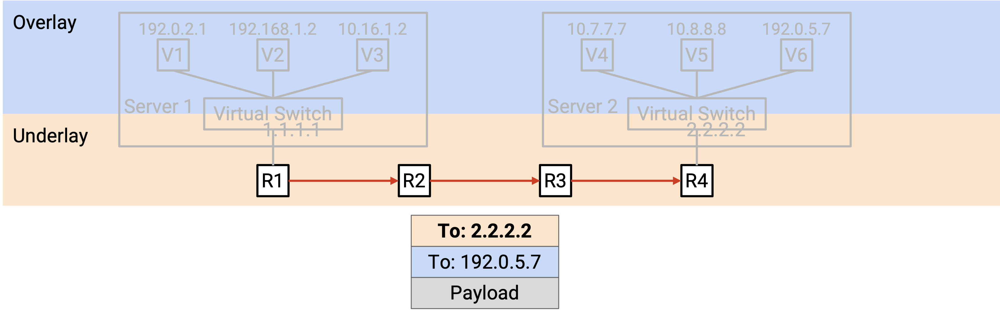
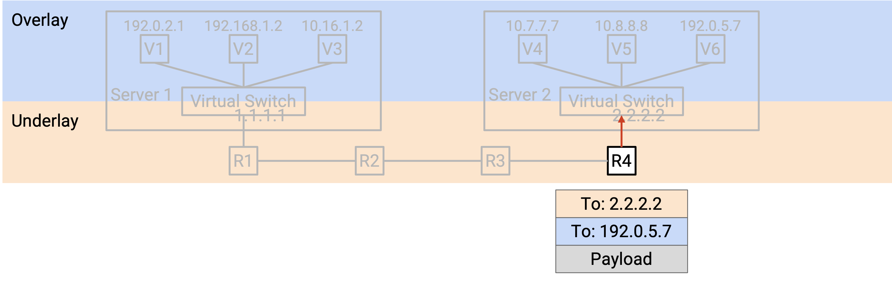
-
Eventually, the packet reaches the destination physical server’s virtual switch. The virtual switch looks at the outer header (underlay) and notices that the destination physical server address is itself.
The virtual switch removes the outer header, exposing the inner header inside. Removing the outer header is sometimes called decapsulation.
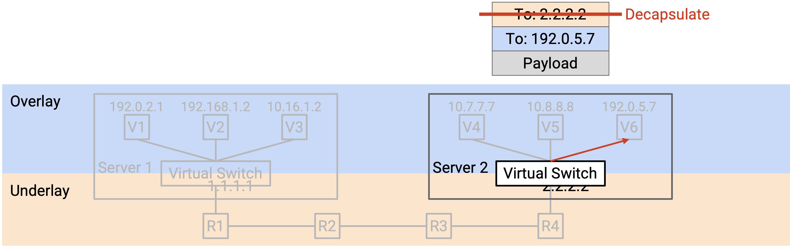
Finally, the virtual switch reads the inner header (overlay). This tells the virtual switch which of the VMs on the physical server the packet should be forwarded to.
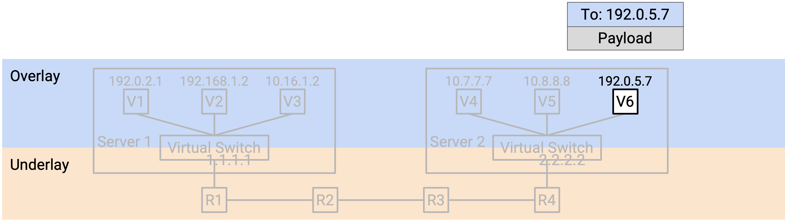
In this process, encapsulation allowed us to think about routing at two different layers. The underlay was able to route packets using physical server addresses, without thinking about the overlay. Similarly, the VM in the overlay was able to send and receive packets without thinking about how to forward packets in the underlay. The virtual switches bridged the two layers by translating the virtual machine address into a physical server address, and adding and removing the extra underlay header.
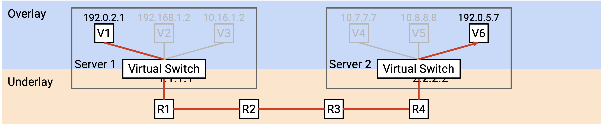
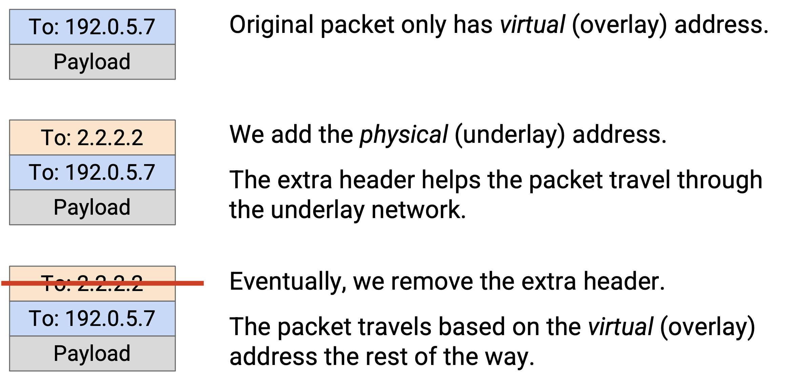
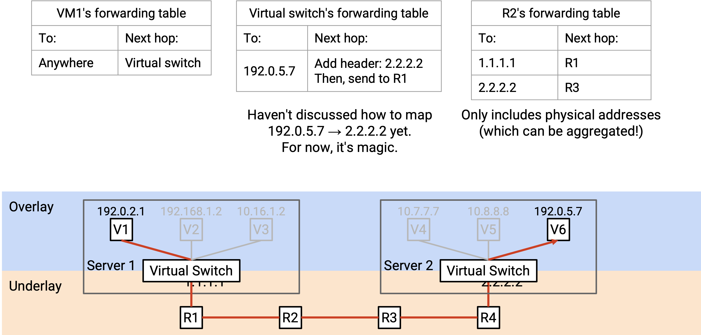
Forwarding Tables with Encapsulation
What entries should we install in the forwarding tables to support routing with encapsulation?
The virtual machines should install a default route that forwards every packet to the virtual switch on the physical machine.
The virtual switches need to implement some extra functionality to bridge the two layers. In particular, when you see a virtual address, you should apply encapsulation (add an outer layer) with the corresponding physical address. The forwarding table has entries for every destination VM that any of the VMs on this server might want to talk to. We can support this scale because we assume the VMs won’t need to talk to every other VM in the datacenter. Unlike standard routing algorithms, we don’t need any-to-any routing (we don’t need paths to every other VM).
Virtual switches also need an extra rule for decapsulating packets. If the outer (underlay) packet destination is the switch itself, you should decapsulate (remove the outer header) and pass the packet to the VM address in the inner header. This rule scales with the number of VMs on the server, which is usually small enough to be manageable.
Is it hard to add this functionality? Fortunately, virtual switches are implemented in software, so adding this functionality just requires writing code (no extra hardware needed). In practice, though, encapsulation is so common that it’s sometimes implemented in hardware anyway.
The switches in the datacenter work exactly the same as they did before we introduced virtualization. The forwarding tables only contain physical server addresses, and we know that these can be scaled with aggregation tricks based on physical topology.
Multi-Tenancy and Private Networks
Datacenters are managed by a single operator, but different organizations might be running applications inside that datacenter. For example, a datacenter run by Google might have some virtual servers run by Gmail, and others run by Google Maps. This approach of hosting multiple services in one datacenter is called multi-tenancy.
Cloud providers also use datacenters to supply virtual machines for customers. For example, Amazon Web Services (AWS) and Google Cloud Platform (GCP) allow users to start up a virtual machine in a datacenter, do whatever they want, and destroy the virtual machine when they’re done.
One problem with multi-tenancy is, we don’t always want the different tenants to be able to communicate with each other. For example, if a customer requests a VM, they probably shouldn’t be able to connect to every other VM in the datacenter.
Another problem is, tenants in a datacenter don’t coordinate with each other when choosing addresses. For example, suppose our datacenter had two tenants, Pepsi and Coke. Each tenant creates their own private network, where they assign internal IP addresses to virtual machines. The private network is only for hosts inside the datacenter to communicate with each other, and these hosts will never be contacted from the public Internet. Because the networks are private, the two tenants can both use addresses in the same specially-allocated private ranges (RFC 1918 addresses). Pepsi’s private network might have a VM with IP address 192.0.2.2, and Coke’s private network might have a different VM with IP address 192.0.2.2. (In practice, we use private ranges in order to reuse IPv4 addresses, since we’re running out of them.)
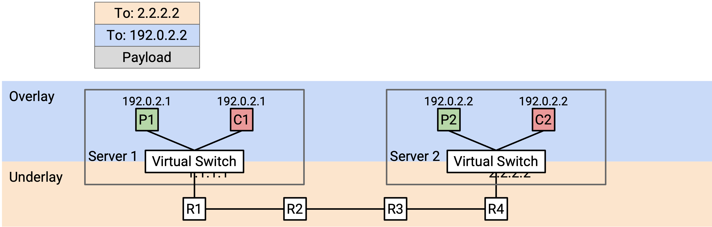
From the perspective of each tenant, this is not a problem. Pepsi’s 192.0.2.2 will never communicate with Coke’s 192.0.2.2, and neither host is accessible to the global Internet. However, this is a problem for the datacenter. If we use destination-based forwarding, and we see a packet with destination 192.0.2.2, we have no idea which VM this address is referring to.
Duplicate IP addresses occur in practice for two reasons. First, datacenters usually don’t have control over what addresses the tenants are assigning to their VMs. Second, in IP, it’s standard practice to use specific ranges for private networks, which often leads to duplicate addresses.
Encapsulation For Multi-Tenancy
We can use the idea of encapsulation again to solve this problem. We can add a new header that contains a virtual network ID for identifying a specific tenant (e.g. Pepsi has ID 1, Coke has ID 2). This new header doesn’t contain information for forwarding and routing, but it provides additional context. Now, if a physical server has VMs for multiple tenants, it can pass the packet up to the correct virtual network.
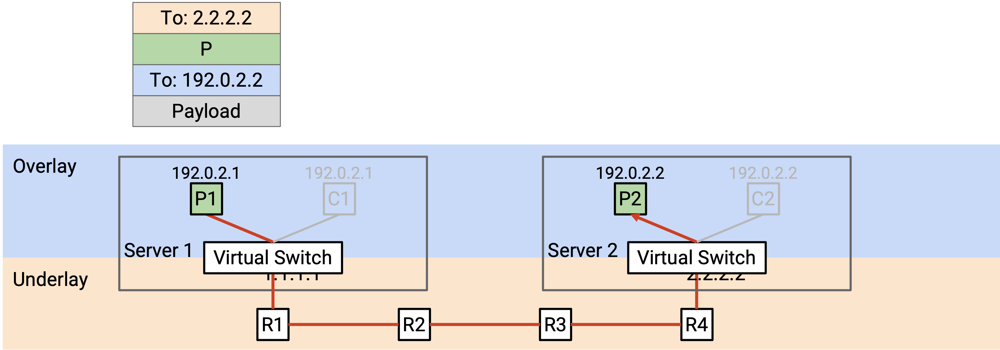
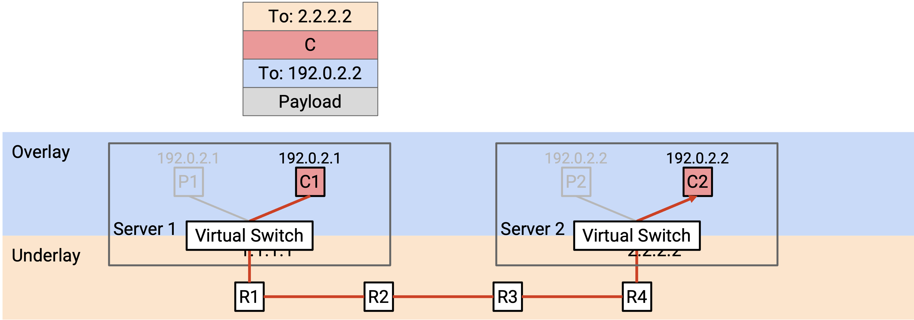
When a virtual switch receives a packet and unwraps the outer (underlay) header, it looks at our new header to decide which tenant the packet is meant for. Then, it looks at the overlay header to forward the packet to a specific VM belonging to the correct tenant.
Stacking Encapsulations
We can use the idea of encapsulation multiple times, adding multiple new headers to support both virtualization and multi-tenancy.
To start, the virtual machine creates a standard TCP/IP packet, with a virtual IP destination.
In the first encapsulation step, we add a virtual network header, which tells us which tenant sent this packet. This helps us disambiguate two tenants using the same address, and also prevents packets from being sent to a different tenant.
In the second encapsulation step, we add an underlay network header, which tells us the physical server address corresponding to the virtual IP destination.
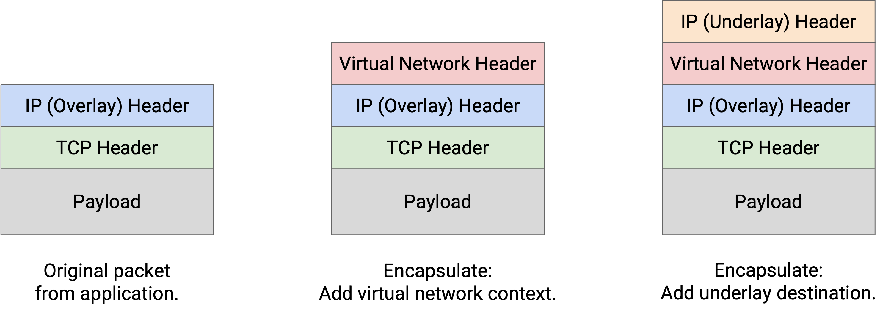
The layers of abstraction still hold when we stack encapsulations. The underlay network doesn’t need to know that multiple tenants are in the same datacenter. The underlay network just looks at the outermost header for a physical server address, and forwards the packet accordingly.
The decapsulation step works in reverse order. The virtual switch on the destination server receives a packet with two extra headers.
In the first decapsulation step, we remove the outer underlay header. This is no longer necessary since the packet has reached the destination physical server.
In the second decapsulation step, we use the virtual network header to decide which set of VMs we should think about. The physical server might have VMs for multiple tenants, and this helps narrows down to a single tenant.
Finally, we use the innermost IP header to send the packet to the correct VM in the correct virtual network.
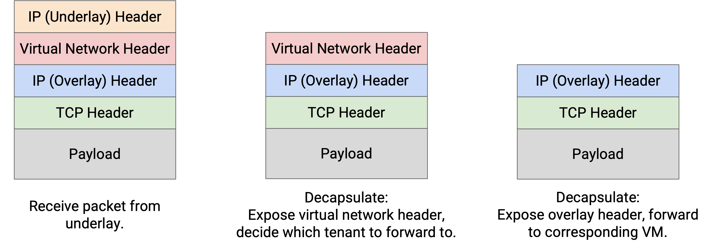
Note: With encapsulation, we have to be careful when reading the 5-tuple (IPs, ports, and protocol) for load-balancing packets across multiple paths. Fortunately, modern router hardware is good at parsing packets to understand where the relevant headers are located in the packet, even if additional headers are inserted.
In practice, many different protocols exist for encapsulation. We could use IP-in-IP to support two IP headers (one for overlay, one for underlay).
MPLS is a simple header for adding a label that identifies a service (e.g. a virtual network, a tenant). This can be used to add encapsulation for multi-tenancy.
As datacenters have become more popular, many other protocols like GRE, VXLAN, and GENEVE have been developed. Most of these work over IP, so these custom protocols are the inner overlay header, and regular IP is the outer underlay header.